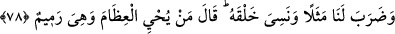
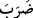
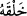
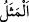

başlangıcının açık bir şekilde şâhidlik ettiği bir hususta birden bire bize düşmanlık
ediyor. İşte bu câhil ve gâfil insanın halidir. Ne güzel söylenmiştir:
Ona her gün ok atmayı öğretiyorum
O ise bileği güçlenince bana ok attı.
Her zaman ona kafiyeleri öğretirim
O ise ilk şiirinde beni hicvetti.
Şu şiir de pek güzeldir:
Ömrüm boyunca bir enik yetiştirdim.
Büyüyüp koca köpek olunca bacağımı ısırdı.
78. Kendi yaratılışını unutarak bize karşı misal getirmeye kalkışıyor ve: “Şu
çürümüş kemikleri kim diriltecek?” diyor.
“Kendi yaratılışını unutarak”
Bu ifade
‘ye matuftur. İnkâr/reddetme ve hayrete sevk etme hükmüne dahildir. “
” kelimesi masdar olup mef’ûlüne muzâf olmuştur. Yani bizim onu nutfeden
yarattığımızı unutarak demektir. O, Allah’ın yeniden diriltmeye muktedir olduğuna
delâlet eden kendi yaratılışının başlangıcını tefekkür etmeyi terk etti. Halbuki ilk
yaratılış ile diriltmenin her ikisi de ölülere ve cansızlara hayat verme olduğundan ikisi
arasında fark yoktur.
Baklî der ki: “İnsanın yaratılışında ve güzel yüzlerde, bütün bir âlemde olandan daha
fazla Allah Teâlâ’nın kudretine delalet eden alâmetler vardır. Çünkü her iki oluş ve her
iki âlem, insanda toplanmıştır. İnsanda Allah’ın ilmi mâlum olmuştur. Şayet insan
nefsini/kendisini tanısa, Rabbini de tanır. Çünkü kâinât (halîka) hakîkatin aynasıdır.
Hakîkat, mârifet ehli için kâinatta tecellî etmiştir. Nice ölü kalp vardır ki cehâleti
yüzünden öldükten sonra Allah onu cemâliyle diriltmiştir.
“Bize karşı misal getirmeye kalkışıyor”
Yâni birden bire bize düşman kesiliyor ve bize karşı misal getirmeye kalkışıyor. Bize
gariplik ve akıllardan uzak olma konusunda darb-ı mesel gibi olan tuhaf bir kıssa ve
misal getirmeye kalkışıyor. Bu ise bizim çürümüş kemikleri dirilteceğimizi inkar etmesi
ve buna muktedir olmadığımızı iddiâ etmesidir.
Şeyhzâde der ki: “
(mesel)” kelimesi, gariplik konusunda yaygın söz demek olan
örfteki mesele benzetilerek mecâzen tuhaf iş hakkında kullanılır. Şüphesiz herşeye gücü
yeten Allah Teâlâ’nın mümkinât cümlesinden olan ölüleri diriltmeye muktedir